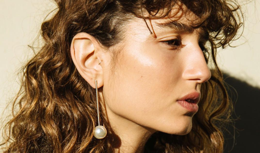
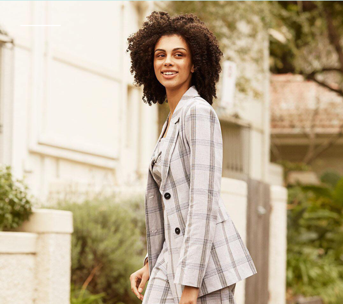
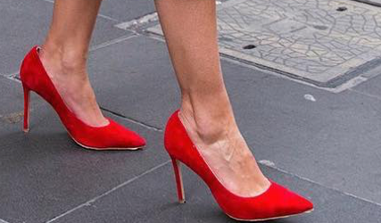

FASHION FATIGUE CAN STRIKE WHEN YOU LEAST EXPECT IT.
After three months of winter, my fashion light bulb has well and truly blown out. I'm now at a point where I'm so sick at the sight of mum-cut jeans and oversized sweater dresses that every morning I find myself irrationally at my wardrobe and throwing myself onto the bed in despair.
Dressing for the day is meant to inspire you, to get you up and going like an everyday YAS queen. So if your wardrobe leaves you stuck in bed with feelings of disdain, then we've worked with Myer ambassador Rachel Finch to bring you ways to pull yourself out to the depths of fashion boredom this season.
REMOVE ALL THE BLACK
Humans are inherently lazy and quite often we are dawn to routine, finding comfort in seeing the same things day after day. This is the same for your wardrobe. If it's left in the same state season to season, you're only going to reach for the items your eyes lay on first or that are within reach because subconsciously, you just can't be bothered to think about it.
Breathe a bit of life into your wardrobe by moving things around. If you normally colour code your clothes, switch it up and sort them out by style instead. Looking at things differently will help those forgotten pieces.
DOLL UP THE BASICS
If you ever find yourself erring on the side of caution and sticking to a basic tee with jeans, try digging into your accessories to create some versatility. Rachel suggests playing with statement pieces to zhoosh up an outfit: "A great pair of heels, a long drop earring, especially from Christie Nicolaides, a tailored blazer or a bold lip colour."
Thankfully the warmer seasons are bringing colour and vibrancy to accessories. Play with headscarves, statement earrings, chunky chairs or bright shoes to spice things up. Be daring and brave when it comes to your accessories and you'll be pleasantly surprised by the outcome. Honestly, you could probably get away with the same tee and jeans for a


